Organic semiconductors
Organic materials steadily break into the market of electronic devices (see organic electronics) as cost effective solution.
Ease of production and recycling, environment-friendly chemistry, advanced molecular engineering, light weight and flexibility are additional advantages of organic electronics over inorganic.
The electronic properties of these materials are determined by the π-conjugated system (see conductive polymer).
We perform research in several thrusts:
One of the challenges of computer-aided design of new materials is prediction of their structure.
For organic semiconductors, due to their pronounced polymorphism and complex multiscale bulk structure, it is notoriously tough problem.
Moreover, atomic-scale resolution is often hard to achieve experimentally for molecular systems due to complex potential energy surface with multiple minima.
In this case accurate first-principle modeling is the only way to refine the molecular structure.
- Lowest-energy crystalline polymorphs of P3HT, J Phys Chem C 122, 9141 (2018)
[pdf]:
We have identified all low-energy crystalline polymorphs of the archetypal conjugated polymer, regioregular poly-3-hexylthiophene (rr-P3HT)
using the best available density functional theory methods benchmarked against the ab initio coupled cluster method.
In addition, we have resolved structure of known polymorphs
(atomic positions were impossible to fully determine from available experimental data).
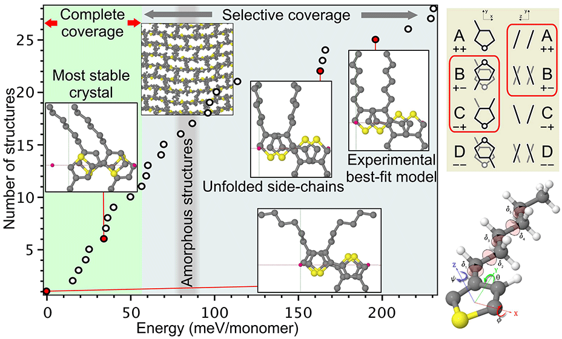
- Ground state geometry and vibrations of polyphenylenevinylene oligomers, J Phys Chem Lett 10, 3232 (2019)
[pdf]:
We have systematically investigated conformational space of polyphenylenevinylene oligomers.
Our calculations show that optimal oligomer structures are essentially planar in the sense that
the ground state vibrational wave-function is delocalized between the two shallow minima
on the potential energy surface of the two dynamically coupled librations.
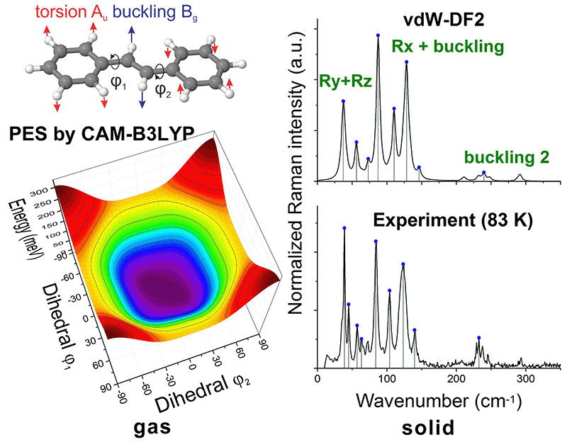
- A Zhugayevych, W Sun, T van der Heide, C Lien-Medrano, T Frauenheim, S Tretiak, Benchmark Data Set of Crystalline Organic Semiconductors, JCTC 19, 8481 (2023)
[pdf,
presentation,
webpage]:
We have created BMCOS dataset to test calculations of structural and electronic properties of organic semiconductors in the solid state.
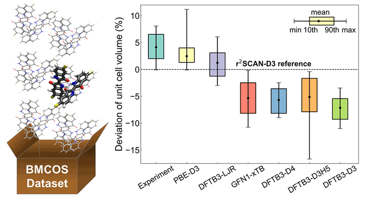
One of the most promising applications of organic semiconductors is in photovoltaics with the best power conversion efficiencies exceeding 16%. A low-cost implementation of organic solar cells is based on bulk-heterojunction of π-conjugated molecular donor and fullerene-based acceptor: the solar radiation is absorbed by the first component resulting in the creation of an exciton migrating to the interface where the exciton is split into the hole and electron transported to the electrodes by the donor and acceptor respectively. The complex multiscale morphology of this device limits the ability of experimental approaches to pinpoint the power conversion losses and thus to avoid the blind search of highly efficient devices. In this situation a theoretical study becomes an essential complementary tool of investigation.
- See review: Theoretical description of structural and electronic properties of organic photovoltaic materials, Annu Rev Phys Chem 66, 305 (2015) [pdf]
- Polymer-based materials: Effects of π-spacer and fluorine loading on the optoelectronic and photovoltaic properties of (X-DADAD)n benzodithiophene-based conjugated polymers, Synthetic Metals 259, 116231 (2020) [pdf]; Impact of the acceptor units on optoelectronic and photovoltaic properties of (XDADAD)n-type copolymers: Computational and experimental study, Dyes and Pigments 185, 108899 (2021) [reprint]
- Oligomer-based materials: Ab-initio study of a molecular crystal for photovoltaics: light absorption, exciton and charge carrier transport, J Phys Chem C 117, 4920 (2013) [pdf]: We perform first-principles study of light absorption, exciton and charge carrier transport in polycrystalline small-molecule based donors. Our results show that there are no power conversion losses on a single-crystallite scale. Thus the main efforts should be put in improving the mesoscale morphology of the active layer.
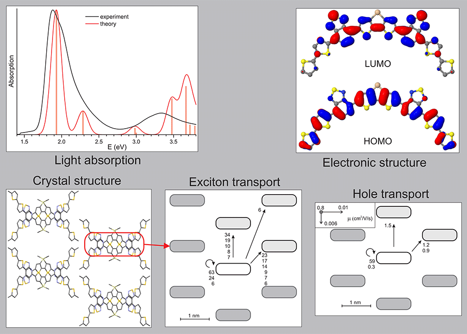
- Non-fullerene acceptors: Microcrystal Electron Diffraction for Molecular Design of Functional Non-Fullerene Acceptor Structures, Chem Mater 33, 966 (2021)
[reprint,
presentation]:
We explain high performance of such non-fullerene acceptors as o-IDTBR and Y6 by their unique 3D "wire-mesh" electronic connectivity.
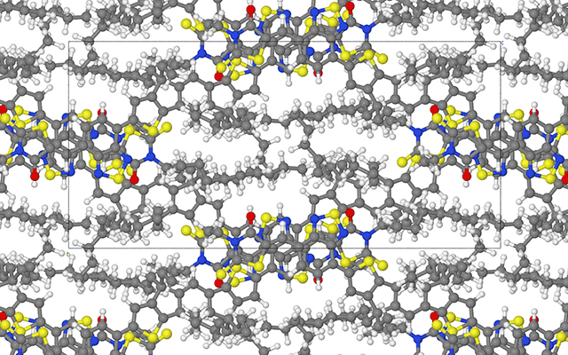
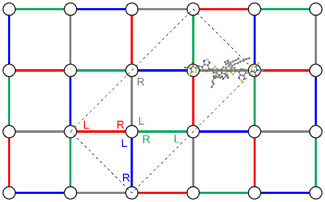
Field effect transistors is another major application of organic semiconductors, showing best charge carrier mobilities exceeding 10 cm2/Vs combined with high on-off ratio. The main theoretical challenge is to accurately predict the mobilities and understand mechanisms of charge transport.
Electrochemical energy storage is an emerging application area of organic materials. Microscopic details of charge/discharge process remain poorly understood in solid organic materials.
Rational design of new materials relies on knowledge of structure-property relationships. Computational approach provides in-depth information about intrinsic structure and properties of materials not accessible for direct experimental studies.
- Lewis acid doping – absorption shift: Tuning optical properties of conjugated molecules by Lewis acids: insights from electronic structure modeling, J Phys Chem Lett 10, 4632 (2019) [pdf]
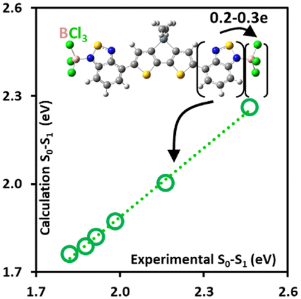
- Functional group – absorption shift: Modification of optoelectronic properties of conjugated oligomers due to donor/acceptor functionalization: DFT study, Chem Phys 481, 133 (2016) [pdf,files]
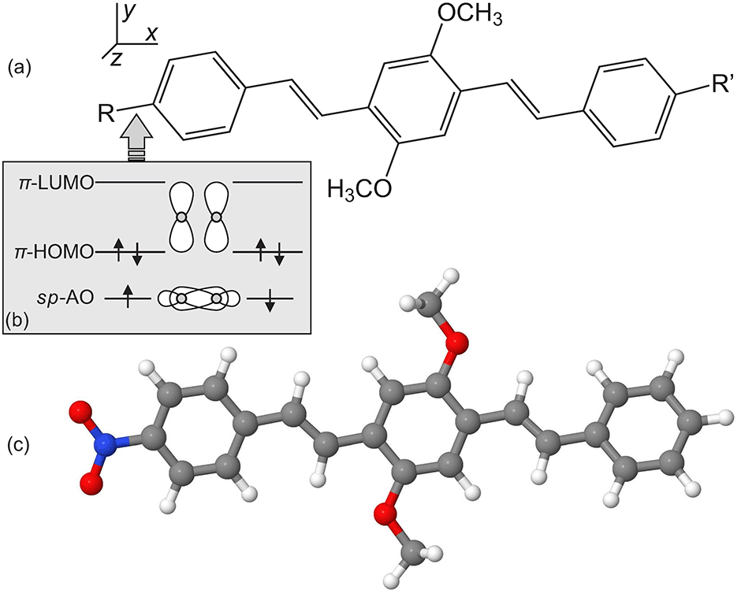
- Regiochemistry – mobility: Charge delocalization characteristics of regioregular high mobility polymers, Chem Sci 8, 1146 (2017) [pdf]
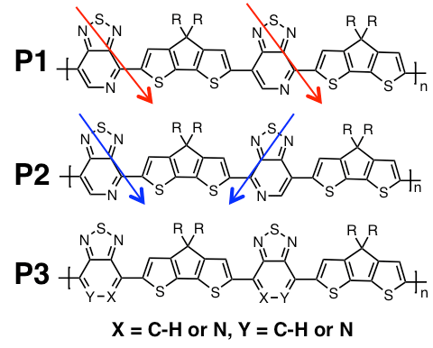
- Isovalent substitutions – crystal structure: Polymorphism of crystalline molecular donors for solution-processed organic photovoltaics, J Phys Chem Lett 5, 2700 (2014) [pdf]
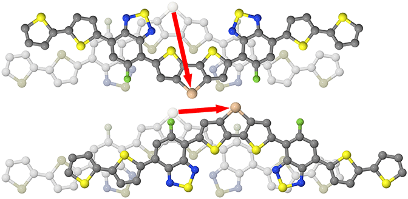
- Monomer substitutions – molecular structure: A combined experimental and theoretical study of conformational preferences of molecular semiconductors, J Phys Chem C 118, 15610 (2014) [pdf]
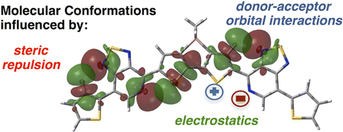
{kind=link}